Spendly: Track expenses and split bills, all in one tap
Background
Tracking expenses is part of everyday digital life, but research shows a gap between personal finance and splitting bills with others. After a group meal or trip, people often jump between apps to do the math, breaking up the flow. Spendly brings “My Ledger,” “Shared Ledger” and “Split Projects” together, so managing money isn’t a solo task but something you can do with others anytime — closer to how people actually live.

Design Process
- Requirements
Tracking and splitting expenses are frequent needs, but tedious input wears down users’ patience. This project focused on breaking down those pain points and turning fragmented actions into a smooth, intuitive experience.
- Logic & Structure
Distilled data from competitive analysis and a user survey into the core feature logic, so the design direction matched real needs.
- Wireframing
Explored solutions quickly with low-fidelity prototypes and validated assumptions through usability testing — catching logic risks early to cut late-stage changes and work more efficiently.
- UI Design
Extended a new brand identity into the interface, building a systematic visual language and guidelines so the product stays consistent and recognizable across devices.
- Design system
Built the design system with modular logic, turning styles and components into an extensible language that supports the product’s long-term growth.
- Prototyping
Built high-fidelity interactive prototypes to validate the full flow, reviewing interaction details and transitions to make sure the logic holds up in real use.
Problem
Expense trackers don’t lack features, yet people still give up on them. To find out why, we approached it from two angles — user interviews and a survey, and competitive analysis — to understand real user behavior and where existing products fall short.
User Interviews & Analysis
Before formal design and analysis, I created a survey on everyday expense-tracking and bill-splitting habits to test early assumptions and get more realistic feedback. Collecting responses from friends with different backgrounds helped uncover pain points in real behavior and gave the feature structure and visual experience a data-backed foundation.
The research showed that people aged 30–40 are the main users of expense apps. They’re at a busy point in their careers, with a fast pace of life and strong financial awareness. So the design shouldn’t just cover features — it needs to fit their lifestyle: logging an expense in seconds, and offering reports that actually mean something.

From the survey and user research, we identified two core pain points in today’s expense apps
Tedious flows and complex interfaces: too many advanced features raise the barrier to entry, going against the essence of expense tracking — simple and fast.
Features disconnected from real situations: apps may be feature-rich, but personal ledgers and group bill-splitting usually live apart, with no intuitive link — forcing users to reconcile across apps and enter things twice.
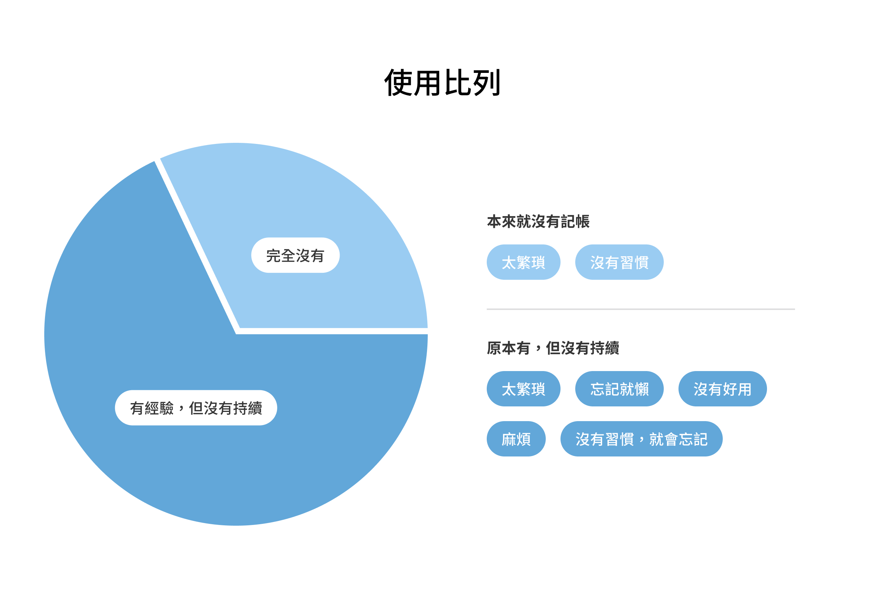
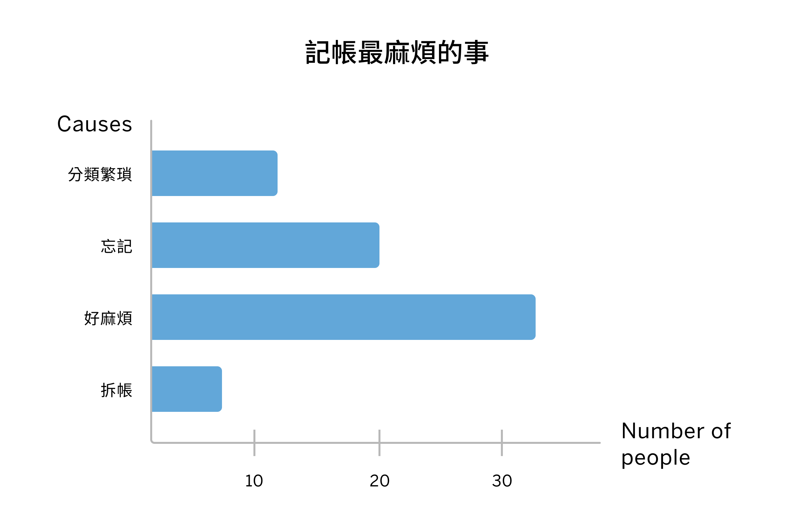
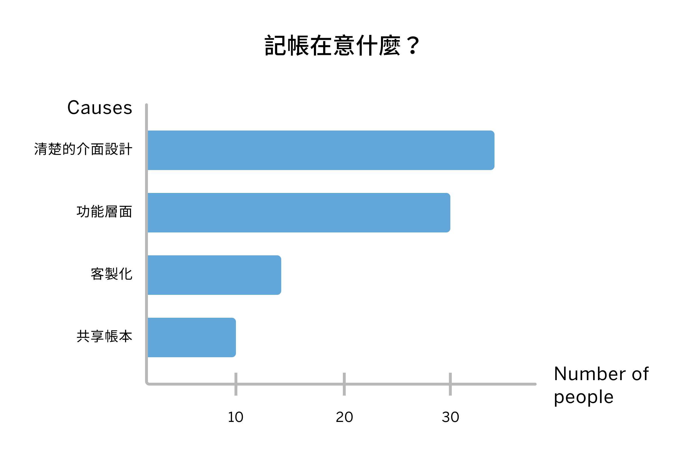
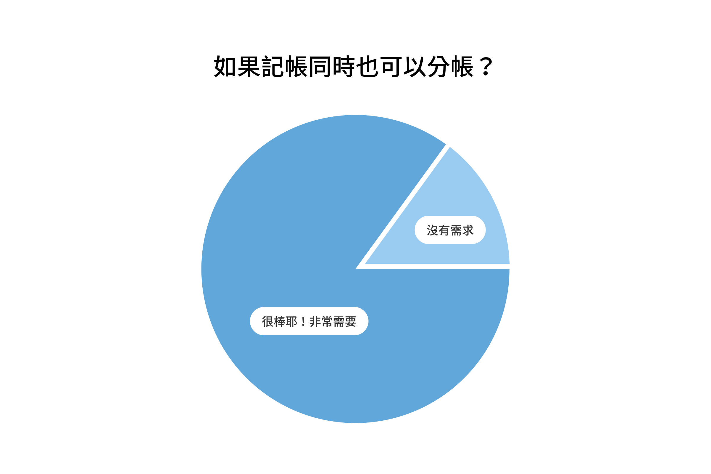
Competitive Analysis
Breaking down the leading expense-tracking and bill-splitting apps revealed a clear experience gap in the market.
Expense trackers focus on personal control and data visualization but neglect smooth collaboration and real-time interaction with others. Bill-splitting apps focus on settling up in the moment but stay short-term, with no link to long-term planning — so users end up switching back and forth between apps.

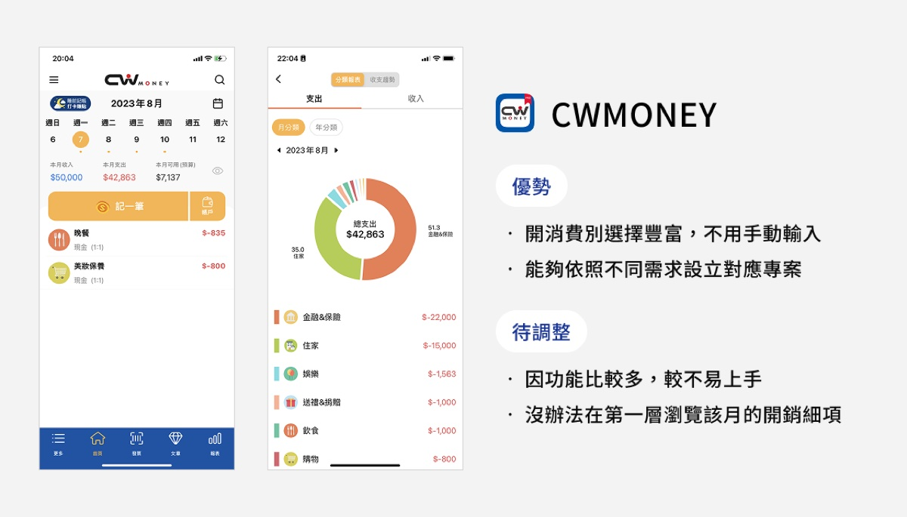

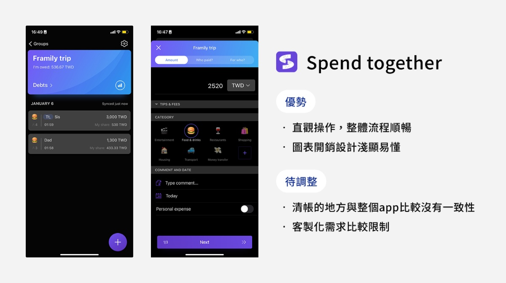
Design Approach
With finance tools so fragmented, we didn’t start by piling on features — we went back to users’ real lives. Based on the research and user feedback above, we mapped the full journey across everyday spending, social interactions and money flow, and identified three core motivations that shape the experience, which became the starting point for our design strategy.
Daily spending is full of small things —
I just want something simple to use
Splitting the bill with friends
always gets confusing

Leftover foreign currency from a trip —
and a friend happens to need it
“ Seamlessly combine expense tracking and bill splitting into one complete financial flow, in one app ”
1Lightweight tracking built for speed
Everyday spending is fragmented, and users resist tedious steps. They want a clean interface that lets them log quickly — so tracking fits into life instead of taking it over.
2Solve splitting the bill at group meals
When everyone orders something different, current ways of calculating are vague and slow. Users need more intuitive logic to handle complex splits and keep money between friends clear and transparent.
3Extend into social use with flexible currency exchange
Leftover foreign currency after a trip often just sits idle. By matching it with friends who need it, an “unused” resource becomes a warmer, more social way of managing money.
Deliverables

Before designing solutions, I built a sustainable design system — a systematic component library with a neutral, timeless style — to keep the platform consistent and make future features easier to add and maintain.
Logo Design
Spend + Split = Spendly. The mark is built on the letter “S,” using symmetrical, cut geometric lines to combine spending and splitting. The two overlapping S shapes stand for the flow of money — and for the easy way people share costs with each other.
Mapping the User Flows
Before designing the UI, we mapped the full flows for three core tasks, checking that every entry point, branch and way back made sense. Split Flow A starts from “Add expense”: users finish the basic input, then decide whether to turn it into a split, keeping a single path. Split Flow B enters split projects from the side menu, covering group management, expense details, simplified splitting and settling up. Charts & Analysis brings together views of personal ledgers, shared ledgers and split projects, marking the points that require a VIP upgrade as a basis for the business model.
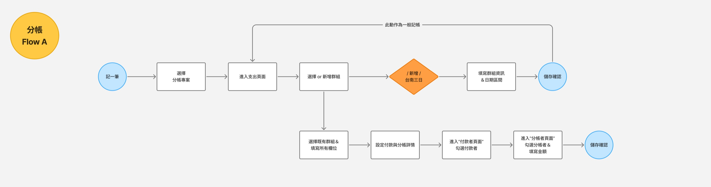
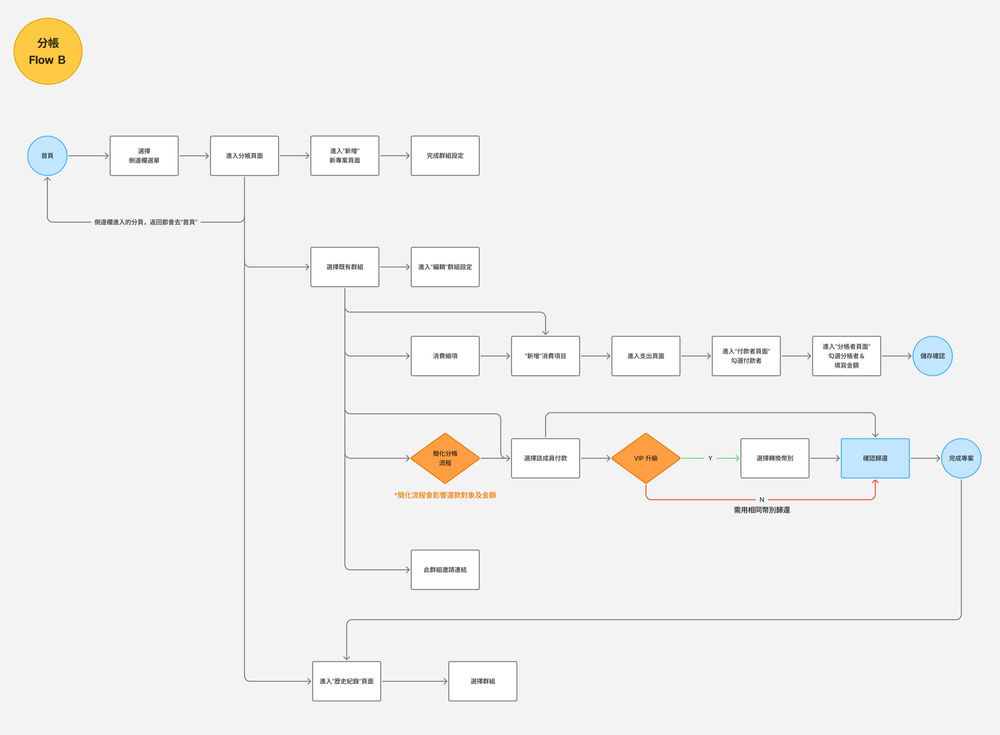
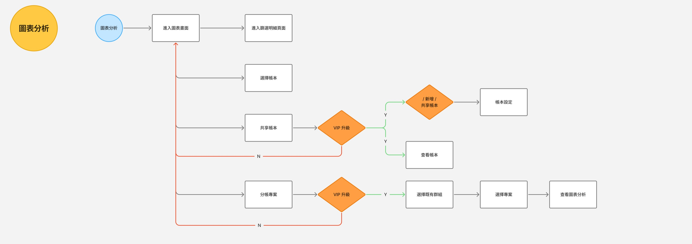
Click an image to enlarge
1Home Flow
The home screen is the hub of the experience, bringing together this month’s spending, a quick-add entry and budget status, so users see the full picture in as few steps as possible. Key points of this flow:
- Centralized information: income, spending and budget grouped by month, so users don’t have to hunt across pages
- Quick paths to action: go straight from home to adding an expense, editing the budget or viewing a category
- Progressive detail: overview → category → line items, keeping information clear without overload
- Secondary features in the side menu: keeps the home screen focused on the main task
With this restructured flow, users complete the full “view → manage → adjust” loop without switching back and forth between pages.
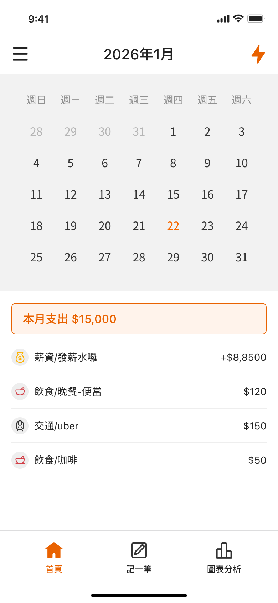
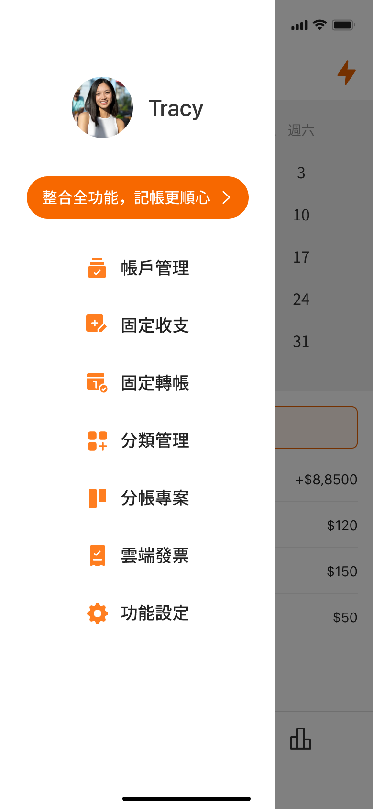

2Add Expense Flow
“Add expense” is a high-frequency core task that has to be low-friction. Our goal was to cut steps and reduce cognitive load without losing any necessary information. Key improvements:
- Single-page structure: date, account, ledger and category are all set on one page
- Bottom-sheet pickers: no page jumps, so users stay in context
- Clear sections: modular blocks reduce visual noise
- Instant amount feedback: reinforces confirmation and reduces mistakes
With fewer steps and better interactions, users can log a complete entry in seconds, so tracking truly becomes part of everyday life.


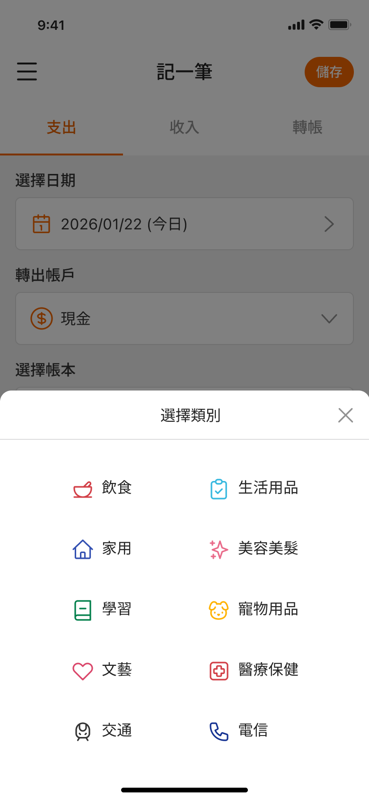
3Split Flow
Splitting is a collaborative task that is information-heavy and needs to be accurate. Our goal was to break down the complex logic of who paid and who owes through step-by-step guidance, so users can quickly sort out the bill on group trips or meals.
- Intuitive branching: a “Split project” entry on the add-expense page lets users finish the basics first, then decide whether to split, keeping a single path.
- Step-by-step tabs: “Expense / Paid by / Split with” breaks a complex split into three steps, reducing overload and effort.
- Quick group selection: pick a project from a side sheet, avoiding page jumps and keeping context.
- Automatic amount check: shares are matched against the total in real time, keeping group splits accurate and transparent.
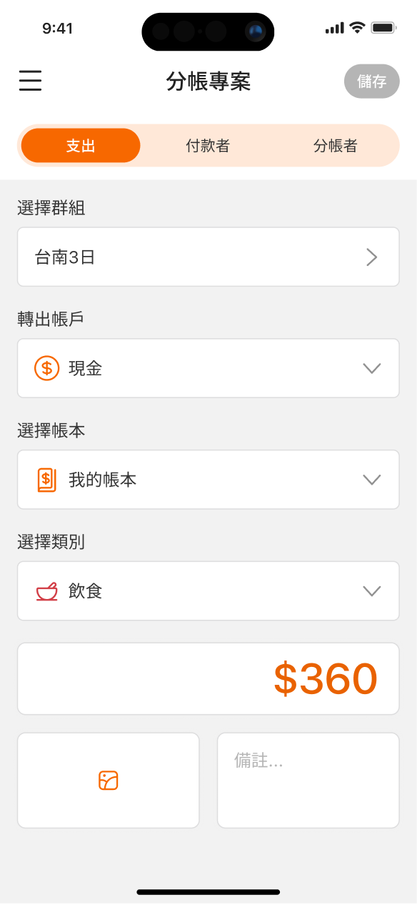
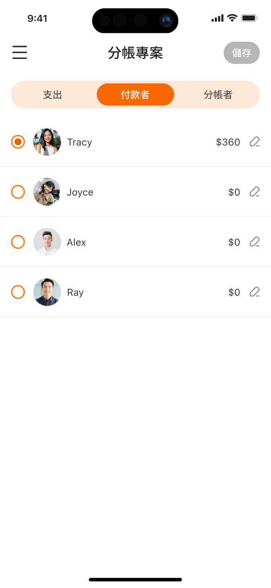

🔗 View Full Prototype
See the full high-fidelity design and interactions in the Figma Prototype →
Thanks for stopping by! ☺